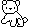
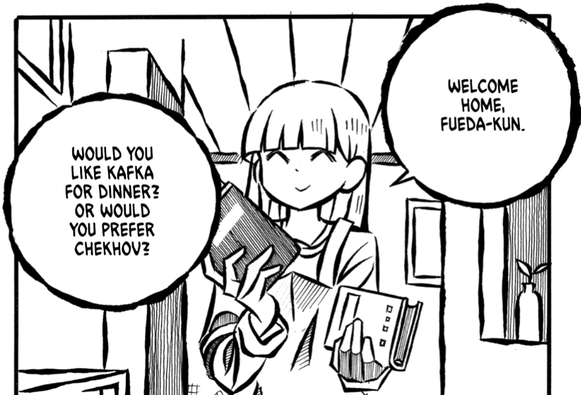

Home
Hello; welcome to my personal website.
This site serves as an outlet for any thoughts and views I feel are significant enough to share, which primarily happen to be about literature. I also share some of my art and media reviews here, as well as quotes and other things I find beauty and meaning in.
I hope you can find some meaning in something here, too.

Last updated: 2026/08/06 (YYYY/MM/DD)
